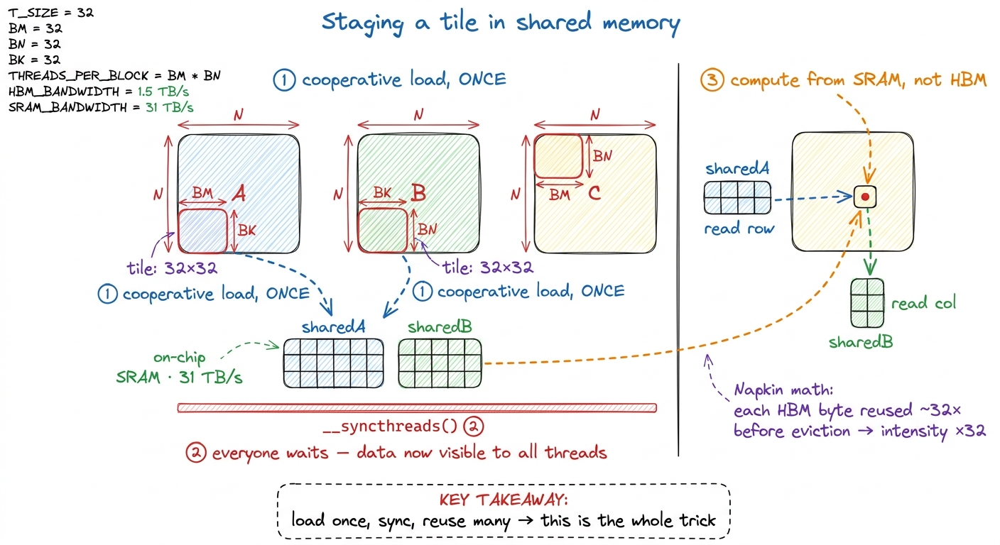
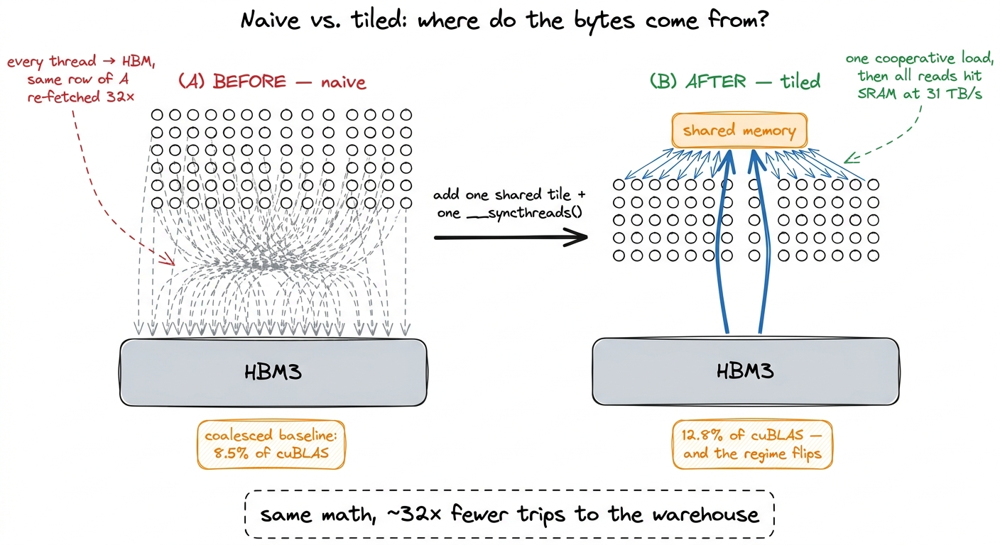
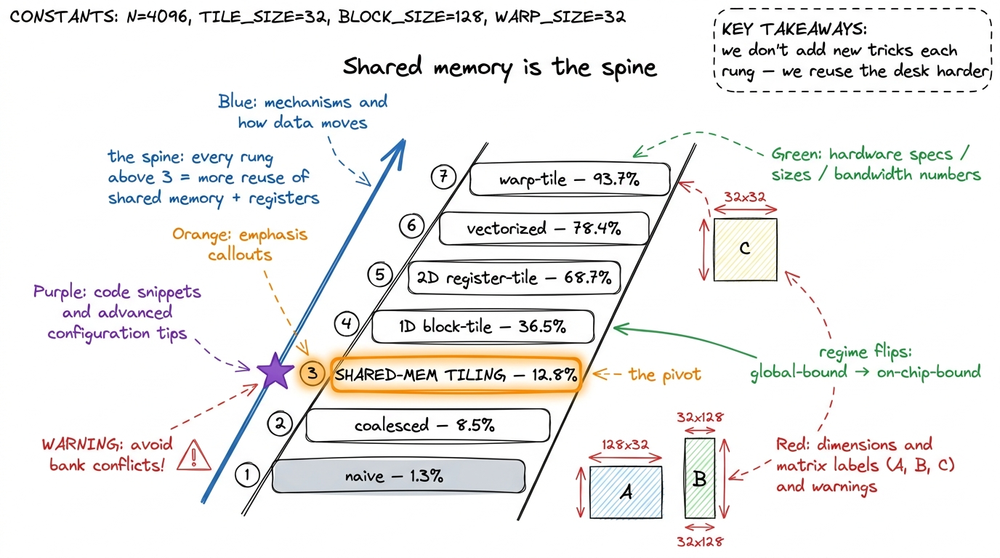
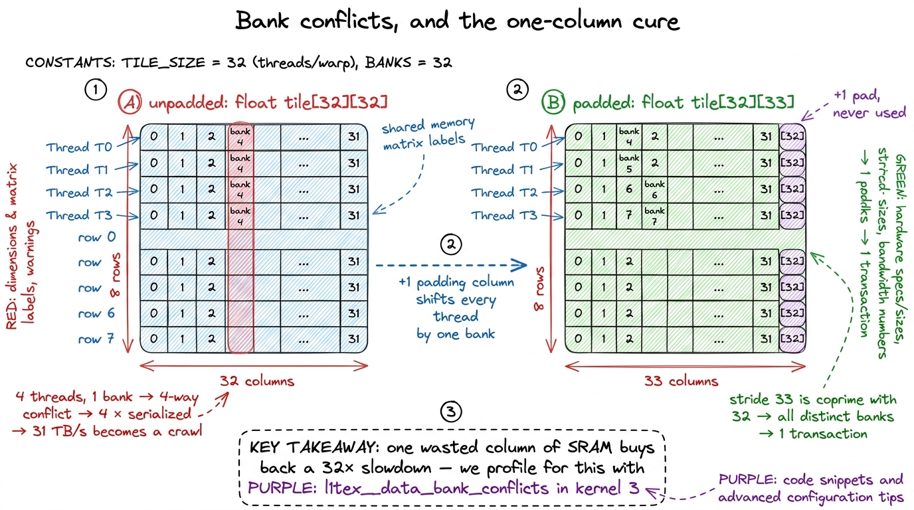

Shared memory & L1 SMEM
Let me start with a confession about the naive matrix-multiply kernel. When I first wrote one and profiled it, I expected it to be slow — but I did not expect it to be slow for such a silly reason. It wasn't doing too much math. It wasn't waiting on some exotic hazard. It was, quite literally, walking to the far end of the warehouse to pick up the same box, thousands of times, because it never thought to keep the box on the desk in front of it.
That warehouse is global memory — the 80 GB of HBM3 (High-Bandwidth Memory) soldered around an H100 die. It is enormous and, by GPU standards, achingly far away. The desk in front of you is a tiny pool of on-chip memory called shared memory, and it is roughly 9× faster to reach. The entire art of writing a fast GEMM (GEneral Matrix-Matrix multiply) is the art of noticing which boxes you'll need again soon, and putting them on the desk before you start working.
This article is about that desk. It answers one question: why is shared memory the single most important optimization surface on the whole GPU, and what is it actually made of? We'll build the mental model you need before you write a single __shared__ declaration — what shared memory physically is, how much you get, how it's carved out of the same silicon as the L1 cache, why it turns a memory-bound kernel into a compute-bound one, and the one trap (bank conflicts) that can quietly hand your speedup right back. We'll stop just short of the tiling code itself — that's kernel 3 — but by the end you'll understand exactly why that code works.
You don't need to have read the earlier rungs to follow along. Where a fact comes from a sibling article I'll link it, but I'll re-establish anything load-bearing from scratch.
The one number that starts the whole story
Let me put the two numbers side by side, because the entire article hangs off the gap between them.
On an H100, HBM3 delivers about 3.35 TB/s of bandwidth. That sounds huge — and in absolute terms it is; it's more than you could saturate with most CPU workloads. But it is shared by all 132 Streaming Multiprocessors (SMs) on the chip, and every one of those SMs is a small army of arithmetic units starving for operands. The on-chip shared memory, by contrast, gives you roughly 31 TB/s per SM, at a latency of around 30 cycles versus HBM3's roughly 500 cycles.1 These bandwidth figures are the effective on-chip aggregate, not a spec on a datasheet line. The exact 31 TB/s depends on clock and the mix of load/store; treat it as "about an order of magnitude faster than HBM, at roughly a fifteenth of the latency." The 500-cycle HBM latency is likewise a round number — real latency varies with contention and where the bytes are in the L2.
So: ~9× the bandwidth and ~15× less latency. Hold that ratio in your head. Every optimization we make from here is, underneath, a scheme to move a byte's worth of work from the slow tier to the fast tier and then reuse it there many times.
 figure rendering · The mental model for the whole article: global memory is a distant war
figure rendering · The mental model for the whole article: global memory is a distant warThat desk-and-warehouse picture is the article's central mental model. I'll come back to it again and again. Every time you feel lost, ask: is this byte on the desk, or am I walking to the warehouse for it?
Why the naive kernel walks to the warehouse every time
Let's make the problem concrete with a tiny example you can do by hand, because the arithmetic is the whole argument.
Say we're multiplying two matrices, C = A × B, and for simplicity they're N × N. The definition says each output element is a dot product: C[i][j] = sum over k of A[i][k] * B[k][j]. That's N multiply-adds per output, N² outputs, so ~2N³ floating-point operations total.
Now count the memory traffic in the naive kernel, where one thread computes one output element and reads its operands straight from HBM. Thread (i,j) reads the whole i-th row of A (that's N values) and the whole j-th column of B (another N values) — 2N reads to produce one output. Across all N² threads that's 2N³ reads from global memory.2 In practice the L2 cache catches some of this re-reading, so the actual HBM traffic is less than the full 2N³. But the naive kernel gives you no control over what stays cached — it hopes the hardware keeps the right bytes. The point of shared memory is to stop hoping and start pinning. That's the real difference, cache vs scratchpad, which we'll unpack in a moment.
Here's the surprising part, and it's worth stopping on. The thread computing C[0][0] reads all of row 0 of A. So does the thread computing C[0][1]. And C[0][2]. Every one of the N threads in output-row 0 independently re-fetches the exact same row of A from HBM. We're paying for the same box, N times over, walking to the warehouse each time.
Let's put a number on how bad that is. Arithmetic intensity is the ratio of math to memory — flops per byte moved. The naive kernel does about 1 flop (one multiply-add pair is 2 flops) per operand loaded, and in FP32 an operand is 4 bytes, so its intensity is roughly ~0.25 flop/byte. From the three regimes we know the H100's ridge point — the intensity where a kernel stops being memory-bound and starts being compute-bound — sits around 295 flops/byte in FP32. We are a thousand times below the line. The kernel isn't slow because the math is hard; it's slow because it's suffocating on memory traffic while the arithmetic units sit idle.
This is why the truly naive kernel is a disaster: on siboehm's A6000 it manages just 309 GFLOP/s — 1.3% of cuBLAS, nearly two orders of magnitude off, for a reason we can now name precisely: catastrophic re-fetching of bytes we already had.3 The very next fix — global memory coalescing, making the 32 threads of a warp read contiguous addresses so the hardware fuses them into one wide transaction — already lifts that to 8.5% (1,986 GFLOP/s) without touching shared memory at all. That coalesced-but-cacheless kernel is the baseline we compare the shared-memory win against for the rest of this article, because it isolates reuse as the variable. Coalescing is covered in its own rung. The kernel isn't slow because the math is hard; it's slow because it's suffocating on memory traffic while the arithmetic units sit idle, and the numbers say so.
One block of SRAM wearing two hats
So we want a desk. Where does the GPU keep one?
Physically, shared memory is not a separate structure bolted onto the SM. On each SM there is a single block of fast static RAM (SRAM) — 256 KiB of it on Hopper — and the hardware splits that one block between two different jobs: the hardware-managed L1 data cache and the programmer-managed shared memory.4 This "unified L1/shared" design has been the NVIDIA way since Volta (2017). Before that, on Kepler and Maxwell, L1 and shared memory were genuinely separate arrays and the split was a fixed floorplan. Unifying them is exactly why the split became a runtime knob instead of a hardware constant — the same transistors can serve either role. Same silicon, same read ports, same latency class. The only difference is who decides what lives there.
That difference is the entire point, so let's be careful about it.
L1 is a cache. The hardware guesses what you'll reuse, keeps recent bytes automatically, and evicts them on its own policy when it needs the room. You get no direct say. It's helpful precisely when you don't know your access pattern in advance.
Shared memory is a scratchpad. Nothing lands in it unless you write it there with an explicit instruction, and nothing leaves until you overwrite it. It is fully under your control and fully predictable.
For GEMM, that control is everything, and here's why. We know exactly which bytes will be reused — we saw it above: a whole row of A gets read by every thread in an output row. We don't want to hope the cache happens to keep that row around under memory pressure. We want to pin it. Shared memory lets us say: load this tile, keep it right here, and don't you dare touch it until I'm done. That's the desk. L1 is a helpful assistant who might have left the box out; shared memory is you, deliberately setting the box down where you'll grab it.
 figure rendering · The on-chip memory hierarchy of one SM. Shared memory and L1 are two p
figure rendering · The on-chip memory hierarchy of one SM. Shared memory and L1 are two pNotice the pyramid has a tier above shared memory too: registers, the tiny per-thread storage that's faster still. We'll lean on registers heavily in later kernels, but the jump from "warehouse" to "desk" — HBM to shared — is the one that changes everything, so it's where we'll spend our time.
How much desk do you actually get?
You'd think 256 KiB of SRAM means 256 KiB of shared memory. It doesn't, and the reason is worth knowing so a launch failure doesn't cost you an afternoon.
The headline number on Hopper: you can carve out up to 228 KiB of that 256 KiB block as shared memory per SM. The remaining ~28 KiB is reserved — for the L1 role and for the hardware's own bookkeeping — which is why you can never claim the full 256.5 That 228 KiB isn't even exactly usable in practice; the effective ceiling is closer to 228 − (num_blocks × 1 KiB), because each resident thread block on the SM carries about 1 KiB of per-block overhead. So the more blocks you pack onto an SM, the less of the 228 each one actually gets. The number is not a round power of two precisely because of these carve-outs.
And 228 KiB is not what you get by default — it's the opt-in maximum. Ask for it and there's a cost: a block that wants 228 KiB is the only resident block on its SM, because there isn't room for a second. If you'd rather have two or three blocks co-resident on the SM (to hide latency better — more on that shortly), you deliberately ask for less. So requesting shared memory is always a negotiation between "big tile" and "many blocks."
To get more than the conservative default of 48 KiB, you have to ask explicitly — both as a static attribute on the kernel and by opting into the larger dynamic allocation:
// Opt into the large shared-memory carve-out (Hopper: up to 228 KiB)
cudaFuncSetAttribute(myKernel,
cudaFuncAttributeMaxDynamicSharedMemorySize,
228 * 1024);
// Then launch with that much dynamic smem:
myKernel<<<grid, block, 228 * 1024>>>(...);Skip that opt-in and the driver silently caps you at 48 KiB. A tiling kernel that "should" have room for a big tile then quietly fails to launch, or falls back to a smaller footprint, and nothing errors loudly. It just runs slow. I've lost real time to exactly this. So the first habit of shared-memory work is boring but non-negotiable: decide your tile size, compute the bytes, and ask for exactly that.
Let me make "compute the bytes" concrete, because it's the kind of arithmetic you'll do constantly. Suppose kernel 3 uses 32 × 32 tiles and stages both an A tile and a B tile. That's 2 × 32 × 32 floats = 2,048 floats × 4 bytes = 8,192 bytes, about 8 KiB per block. Comfortably under 48 KiB, so this one doesn't even need the opt-in. But when we grow to 128 × 128 tiles later, 2 × 128 × 128 × 4 = 131,072 bytes ≈ 128 KiB per block — now we're deep into opt-in territory, and forgetting the cudaFuncSetAttribute call is a launch failure waiting to happen.
The carveout is a slider, and GEMM slams it right
Because L1 and shared live in the same SRAM, giving more to one takes from the other. It's a see-saw. Hopper lets you steer where the fulcrum sits with cudaFuncAttributePreferredSharedMemoryCarveout, expressed as a percentage. The clearest way to picture it is a slider.
 figure rendering · The split is a per-kernel slider. GEMM slams it all the way toward sha
figure rendering · The split is a per-kernel slider. GEMM slams it all the way toward shaFor GEMM the choice is obvious: we don't want an opaque cache guessing for us, we want the biggest deliberate scratchpad we can get, so we push the slider all the way to shared. But name the trade honestly. Every kilobyte you hand to shared memory is a kilobyte L1 can't use to catch your incidental global accesses — and, more importantly, a bigger per-block shared footprint means fewer blocks fit on an SM at once.
That last consequence has a name — occupancy — and it deserves a proper look, because it's the counterweight to everything we're about to do.
The counterweight: occupancy and hiding latency
Here's a question that trips people up: if shared memory is so fast, why do we care how many blocks are resident on an SM? Why not just give one block the whole desk and let it rip?
The answer is latency hiding, and it's one of the most beautiful ideas in GPU design. Even a shared-memory access takes ~30 cycles; an HBM access takes ~500. Whenever a warp (a group of 32 threads that execute together) issues a load and has to wait for the data, the SM doesn't sit idle — it instantly switches to a different warp that's ready to compute. With enough warps in flight, there's always someone ready to run, and the memory latency is completely hidden behind other warps' math.
Occupancy is a measure of how many warps you have available to play this hiding game — the ratio of resident warps to the SM's maximum. Low occupancy means few warps to switch among, so when they all stall on memory, the SM genuinely idles. That's the danger of grabbing all the shared memory for one block: you might make each memory access fast, but leave yourself with too few warps to hide the accesses that remain.
 figure rendering · Latency hiding in one picture. With only one warp, the SM idles throug
figure rendering · Latency hiding in one picture. With only one warp, the SM idles througNow we can state the real trade-off precisely. Big tiles → more reuse → higher arithmetic intensity → good. But big tiles → big shared footprint → fewer blocks → lower occupancy → fewer warps to hide latency → potentially bad. The sweet spot is workload-specific, which is exactly why NVIDIA made the carveout a knob instead of a constant. For our kernel 3, using 32 × 32 = 1,024-thread blocks with 8 KiB of shared memory each, the block ends up limited to one block per SM — but that's still 32 warps out of the maximum, about 66% occupancy, which turns out to be plenty to hide memory latency for a workload with this much parallelism.6 66% is not a magic threshold. For memory-bound kernels with abundant parallelism, occupancy past ~50–70% shows sharply diminishing returns — you already have enough warps in flight to cover the stalls, and more just adds register pressure. This is why chasing 100% occupancy is usually a mistake; the real target is "enough."
The heart of it: reuse, and the leap it buys
Now the payoff. Let's do the arithmetic that makes shared memory the optimization, not just an optimization.
The idea, called cache blocking or tiling, is this: instead of each thread independently reaching to HBM for its operands, a whole block of threads cooperatively loads a tile of A and a tile of B into shared memory once, synchronizes so everyone can see the loaded data, and then every thread computes its partial products by reading those tiles out of SRAM at 31 TB/s. A single fetch from the warehouse is now amortized across an entire block of threads working at their desk.
Let me trace it with the same tiny example. Take a 32 × 32 tile. Without tiling, the 32 threads computing output row i each fetched all of row i of A from HBM — 32 independent fetches of the same 32 values. With tiling, the block loads that row (part of the A tile) into shared memory one time, and all 32 threads read it from there. We fetched the box once and put it on a desk that 32 people share.
So each byte fetched from HBM now gets reused ~32 times before it's discarded. Arithmetic intensity jumps by that factor — from ~0.25 flop/byte toward ~8 flop/byte for a 32×32 tile — and while 8 is still short of the 295 ridge point, we've moved thirty-two times closer to it in one step, and set up the pattern that later kernels push all the way over the line.

figure rendering · Cooperative tiling: the block stages the A and B tiles into shared memThe __syncthreads() barrier in that figure is small but essential, and it's worth pausing on because it's the one line that makes cooperation safe. The threads that load a given value into shared memory are not the same threads that read it back. Thread A might load sharedB[5] while thread B needs to read it. If thread B races ahead and reads before thread A has finished writing, it gets garbage. __syncthreads() is a barrier: every thread in the block must arrive before any thread proceeds. It's the handshake that says "the desk is fully stocked — now everyone start working." One barrier between load and compute guarantees that read-after-write safety.7 A real tiling loop that marches across many tiles actually needs a second barrier — one after the compute, before the next tile is loaded — so that fast threads don't overwrite the shared tile while slower threads are still reading the current one (a write-after-read hazard). So kernel 3 has two __syncthreads() per loop iteration, not one. The load→compute barrier is the one that makes cooperation correct; the compute→reload barrier is the one that makes reuse across tiles correct. And it's cheap next to the HBM traffic it saves.
Before and after, side by side
I find the tiling win clicks hardest when you see the two data-flow pictures next to each other — the naive path and the tiled path — because the difference is not subtle once you draw it.

figure rendering · The naive kernel sends every thread to HBM independently. The tiled keThat is the leap, and here's what it buys on the real ladder. Moving from the coalesced-but-cacheless kernel at 8.5% of cuBLAS to this first shared-memory tiled kernel lands us at about 12.8% — a jump to roughly 2,980 GFLOP/s.8 The exact number depends on the GPU and tile shape. On siboehm's A6000 write-up the shared-memory kernel hits 2,980 GFLOP/s (12.8% of a 23,249 GFLOP/s cuBLAS); on an H100 the same idea lands around 13.9 TFLOP/s. Different silicon, same shape of result: a solid step up, but nowhere near done. The ratio to cuBLAS is the number to watch, not the raw GFLOP/s.
A 1.5× speedup is nice, but the raw number undersells what actually happened. The important thing is that the regime changed. Profile the naive kernel and it's screaming that it's starved on global-memory bandwidth. Profile the tiled kernel and the bottleneck has moved — now it's the L1/shared-memory pipeline itself that's the busy resource, showing up in Nsight Compute as a "Stall MIO Throttle" dominating the stall reasons. We didn't just go faster; we changed what's limiting us. That's the sign of a real optimization — you don't shave the bottleneck, you relocate it — and relocating it onto the on-chip path is precisely what opens the door to every kernel above us.
Shared memory is the spine of the whole ladder
Here's the claim I want to leave you with, and then defend: shared memory isn't one rung on the optimization ladder. It's the ladder's spine. Every kernel above kernel 3 is a variation on getting more reuse out of shared memory and registers.
Watch the pattern. The 1D block-tiling kernel has each thread compute several output elements instead of one, so each value it pulls from shared memory gets reused across those outputs — arithmetic intensity climbs again, and we jump to 36.5% of cuBLAS. The 2D register-tiling kernel does it in both dimensions, having each thread compute an 8×8 = 64-element sub-tile held in registers, cutting shared-memory reads per output dramatically (from thousands down to a couple thousand — siboehm measures the SMEM-reads-per-result dropping as each thread does 8× the work) and vaulting to 68.7%. The vectorized kernel loads four floats at once with float4 / LDS.128 instructions and transposes the A tile in shared memory to make those wide loads conflict-free, reaching 78.4%. And the warp-tiling kernel adds an explicit warp-level tile between block and thread for even better register locality, topping out around 93.7% of cuBLAS.
Every one of those is the same move: stage bytes in the fast tier, then wring more reuse out of them before they leave. The whole climb from 12.8% to 93.7% is the story of squeezing the desk harder. Shared memory is where the climb starts and the geometry that every later kernel is optimizing around.

figure rendering · The optimization ladder. Kernel 3 is the pivot where the bottleneck moThe catch we're deferring: bank conflicts
Shared memory is fast — but it is not magic, and there's a way to make it behave almost as slowly as HBM. If we're going to trust the desk, we need to know how it can betray us.
Here's the physical fact. That SRAM block isn't one monolithic memory; it's divided into 32 banks, each 4 bytes (one word) wide, and each bank can serve one word per cycle. Thirty-two banks, thirty-two threads in a warp — that's not a coincidence. The hardware is built so a warp can service 32 word-sized accesses in a single transaction if and only if those 32 accesses land in 32 different banks.9 The mapping is simple and worth memorizing: successive 4-byte words map to successive banks, so the word at byte address a lives in bank (a / 4) % 32. Equivalently, word_index % 32. Everything about conflicts falls out of this one formula.
When the 32 threads of a warp each touch a different bank, all 32 reads complete in one cycle — full 31 TB/s, the number we've been quoting. But when two or more threads in the same warp hit different addresses that fall in the same bank, the hardware can't serve them together. It serializes them, one after another. This is a bank conflict, and an N-way conflict makes that access N times slower. A 32-way conflict throws away 31/32 of your bandwidth and hands you back roughly HBM-class performance — from a memory that was supposed to be your fast desk.
The cruel part is that natural indexing invites conflicts. Suppose every thread reads down a column of a shared tile, and the tile's row width is a multiple of 32 words. Then thread 0 reads element 0, thread 1 reads element width, thread 2 reads element 2×width, and so on. Because width is a multiple of 32, (k × width / 4) % 32 collapses to the same bank for every thread — all 32 pile into one bank. A perfectly reasonable-looking access pattern, secretly 32-way conflicted.
The classic fix is delightfully cheap: padding. Declare the tile one element wider than you use — __shared__ float tile[32][33] instead of [32][32] — so the column stride becomes 33, which is coprime with 32. Now consecutive threads reading down a column land on banks that step by 33 mod 32 = 1 each time, fanning out across all 32 banks. One wasted column of SRAM buys back a 32× slowdown.10 Padding the leading stride is the same trick that shows up later at scale: when a 128-wide tile causes conflicts, the fix is a stride of 132 (128 + 4 padding) so the bank index stops depending on the stride factor. It costs a little SRAM and a little wasted bandwidth on the pad, but it's almost always worth it — conflicts are one of the top things Nsight Compute will flag on a tiling kernel.

figure rendering · A column read into an unpadded tile collides in one bank and serializeWe're flagging bank conflicts here but not solving them yet — they only become measurable once we have a real tiled kernel to profile, so we'll go hunting for them with Nsight Compute's l1tex__data_bank_conflicts counters when we get there in kernel 3. For now, carry the warning label: shared memory hands you a 9× bandwidth win, and a careless access pattern can hand most of it right back.
A note on where this lives in production
None of this is academic history. The exact pattern — stage tiles in on-chip SRAM, reuse them many times, dodge bank conflicts — is what's running under the biggest workloads on Earth right now.
FlashAttention is the most famous example. Its whole insight is to keep the attention computation's intermediate tiles in shared memory rather than writing the giant N×N attention matrix out to HBM and reading it back. It's cache-blocking, applied to attention: load a tile of queries, keys, and values into SRAM, do all the math there, and never materialize the big matrix in the warehouse. That single move is why long-context transformers are tractable. When you serve a model with vLLM, the attention kernels underneath are doing this. When DeepSeek trains at scale, their custom kernels are fighting for exactly the reuse and conflict-free access we've been describing. The desk-and-warehouse trade-off is the load-bearing wall of modern ML systems performance, all the way up to B200-class hardware.
So the humble __shared__ declaration you're about to write in kernel 3 is not a toy exercise. It's the same primitive, scaled down, that the frontier is built on.
The mental model to carry forward
Three facts are worth pinning to the wall before we write the tiling code — and each one is really just the desk-and-warehouse picture from a different angle.
One: shared memory and L1 are the same 256 KiB of SRAM per SM, and you steer the split. L1 guesses; shared memory lets you pin. GEMM wants nearly all of it as scratchpad — up to 228 KiB, opted into explicitly with cudaFuncSetAttribute, because forgetting caps you at 48 KiB and fails silently.
Two: its entire value is reuse. Staging a tile once and reading it from SRAM at 31 TB/s converts a memory-bound kernel into (eventually) a compute-bound one. That's why it's the pivot of the whole ladder — the rung where the bottleneck relocates from global bandwidth onto the on-chip path, and every kernel above it is another scheme to reuse the desk harder. And it always comes paired with a counterweight: bigger tiles mean fewer resident blocks, so you're forever balancing reuse against occupancy.
Three: that bandwidth is conditional. It holds only if a warp's 32 accesses spread across all 32 banks. The moment they pile into one bank, you're back to serialized, HBM-class crawling — and the cure is usually one padding column.
With that in hand, the next step writes itself. We take the coalesced kernel from where we left it, give a block of threads a shared tile of A and B, add exactly one __syncthreads() barrier between the load and the compute, and measure. That's kernel 3: the shared-memory cache-blocked GEMM — the rung where we stop reaching for HBM on the hot path, put the boxes on the desk, and the real climb toward cuBLAS begins.